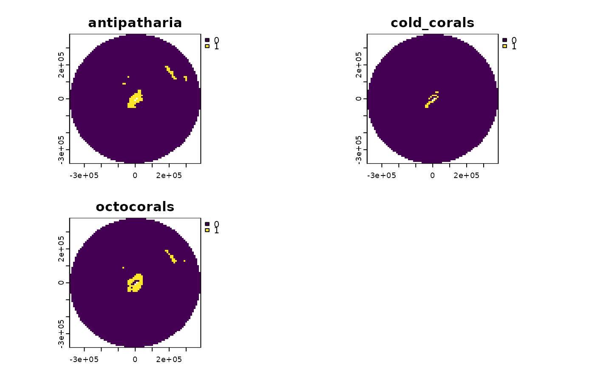

Get coral habitat suitability data
get_coral_habitat.RdThis function extracts coral habitat suitability and creates presence (1) or absence (0) grids for three groups of deep-water coral species: antipatharia, cold water corals, and octocorals.
Usage
get_coral_habitat(
spatial_grid = NULL,
raw = FALSE,
antipatharia_threshold = 22,
octocoral_threshold = 2,
antimeridian = NULL
)Arguments
- spatial_grid
sforterra::rast()grid, e.g. created usingget_grid(). Alternatively, if raw data is required, ansfpolygon can be provided, e.g. created usingget_boundary(), and setraw = TRUE.- raw
logicalif TRUE,spatial_gridshould be ansfpolygon, and the raw data in that polygon(s) will be returned- antipatharia_threshold
numericbetween 0 and 100; the threshold value for habitat suitability for antipatharia corals to be considered present (default is 22, as defined in Yesson et al., 2017)- octocoral_threshold
numericbetween 0 and 7; the threshold value for how many species (of 7) should be predicted present in an area for octocorals to be considered present (default is 2)- antimeridian
Does
spatial_gridspan the antimeridian? If so, this should be set toTRUE, otherwise set toFALSE. If set toNULL(default) the function will try to check ifspatial_gridspans the antimeridian and set this appropriately.
Value
If an area_polygon is supplied, a raster stack of coral habitat
suitability data is returned; note this is the raw habitat suitability/ no.
of species values. If a spatial_grid is supplied, a raster stack or sf
of gridded coral habitat presence/ absence data is returned, depending on
spatial_grid format.
Details
Habitat suitability data are from global Maxent species distribution models for the following species groups:
Antipatharia: The global extent of black coral habiatat suitability modelled using Maxent. The antipatharia habitat suitability is converted to a presence/absence map "by choosing a threshold value of habitat suitability based on the maximum sum of sensitivity and specificity (threshold mss = 0.23)" (Yesson et al. 2017). This threshold can be altered via the function input. Data from Yesson et al. 2017.
Cold water corals: The global habitat suitability for five species of Scleractinia modelled using Maxent. Presence defined using Maxent values above the lowest 10 percent of values. Data from Davies and Guinotte 2011.
Octocorals: The global habitat suitability modelled for 7 species of cold-water octocoral found deeper than 50m. Data from and described in Yesson et al. 2012: "A consensus/summary map incorporating all seven octocoral suborders was constructed by generating binary presence/absence maps from the model outputs indicating areas of high suitability using a score threshold that maximized the sum of the specificity and sensitivity based on the validation data (Carroll, 2010). These binary layers were summed to generate a layer containing the number of octocoral suborders predicted to be present per cell."
Examples
# Get EEZ data first
bermuda_eez <- get_boundary(name = "Bermuda")
# Get raw coral habitat data
coral_habitat <- get_coral_habitat(spatial_grid = bermuda_eez, raw = TRUE)
terra::plot(coral_habitat)
# Get gridded coral habitat data
bermuda_grid <- get_grid(boundary = bermuda_eez, crs = '+proj=laea
+lon_0=-64.8108333 +lat_0=32.3571917 +datum=WGS84 +units=m +no_defs',
resolution = 10000)
bermuda_coral_gridded <- get_coral_habitat(spatial_grid = bermuda_grid)
terra::plot(bermuda_coral_gridded)
